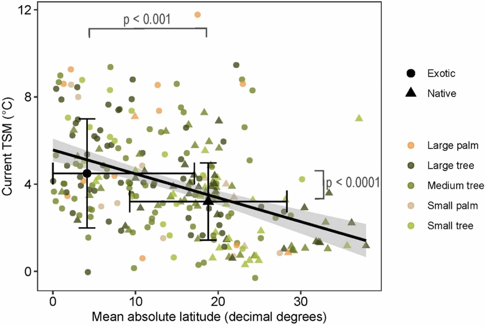
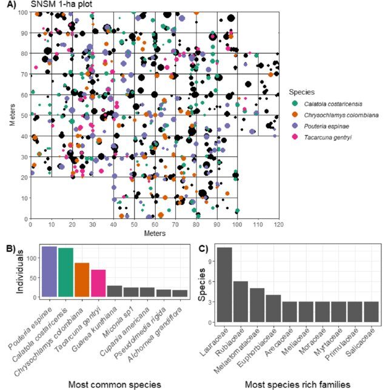
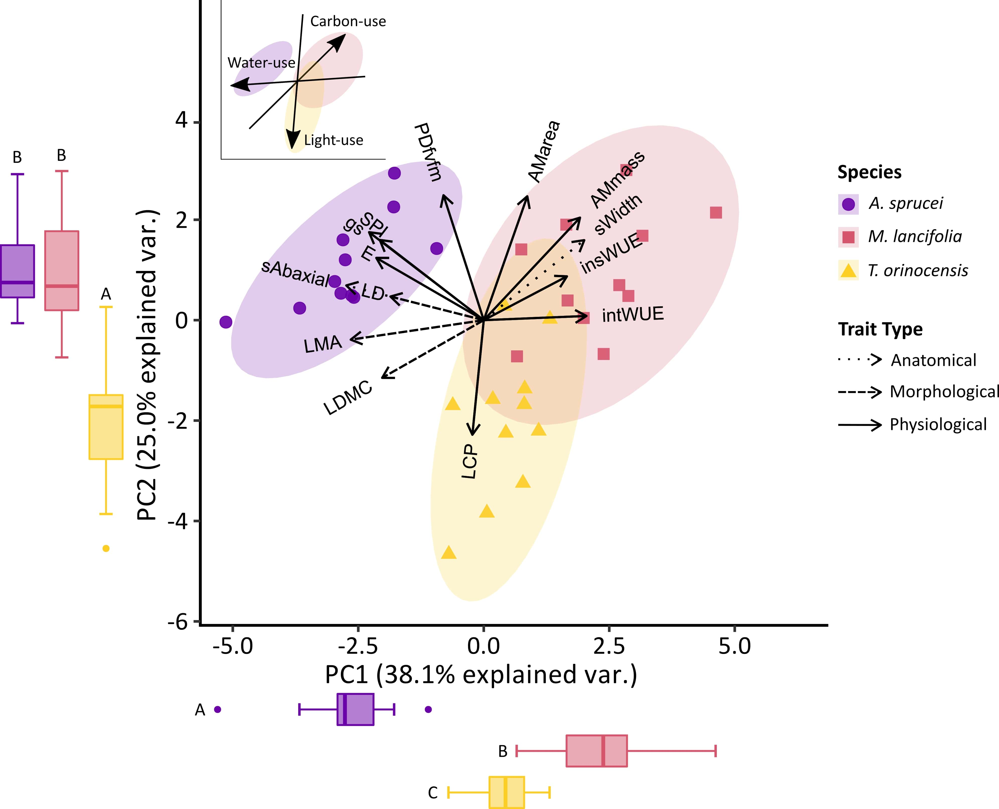
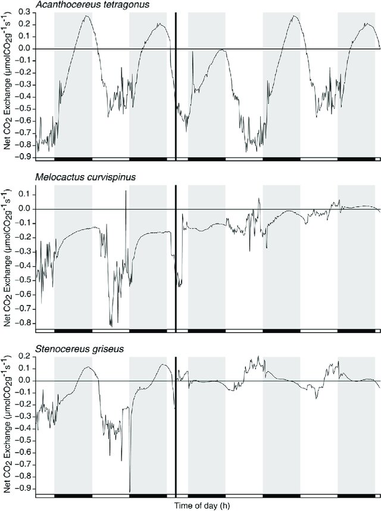

Lina Aragón Plant Biologist
2025

Plant Diversity and Endemism of the Sierra Nevada De Santa Marta, Colombia, with Floristic Comparisons to Surrounding Mountains
2024

Rising temperatures will make Miami’s street life even more exotic

Solar-Powered Life: How Plants And Other Organisms Produce Their Own Food

Diversity, composition, and structure of a 1-hectare tree plot in the cloud forest of the Sierra Nevada de Santa Marta, Colombia
Advice from the field: Practical skills, challenges, and how to support early career ecologists
2023

Tropical shrubs living in an extreme environment show convergent ecological strategies but divergent ecophysiological strategies
2021

Homeostatic response to three years of experimental warming suggests high intrinsic natural resistance in the páramos to warming in the short term
2018

How do young cacti (seeds and seedlings) from tropical xeric environments cope with extended drought periods?
:::